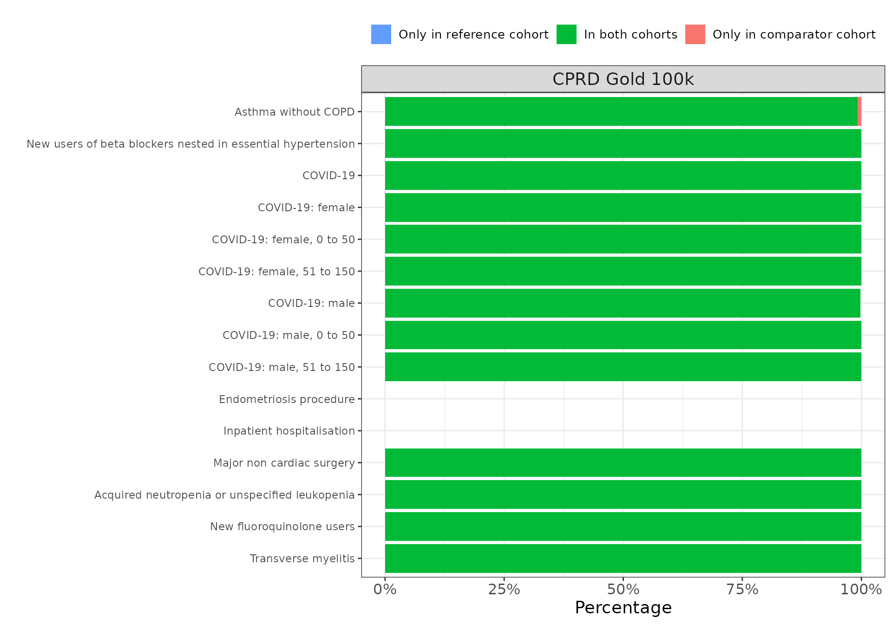
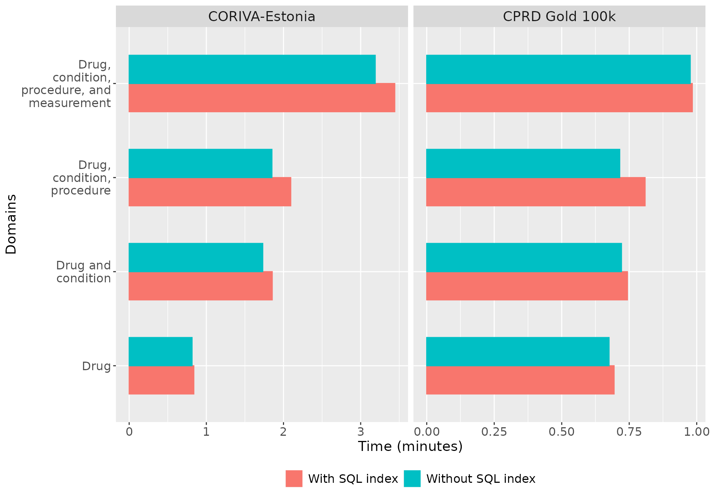

CohortConstructor benchmark
a11_benchmark.RmdIntroduction
Cohorts are a fundamental building block for studies that use the OMOP CDM, identifying people who satisfy one or more inclusion criteria for a duration of time based on their clinical records. Currently cohorts are typically built using CIRCE which allows complex cohorts to be represented using JSON. This JSON is then converted to SQL for execution against a database containing data mapped to the OMOP CDM. CIRCE JSON can be created via the ATLAS GUI or programmatically via the Capr R package. However, although a powerful tool for expressing and operationalising cohort definitions, the SQL generated can be cumbersome especially for complex cohort definitions, moreover cohorts are instantiated independently, leading to duplicated work.
The CohortConstructor package offers an alternative approach, emphasizing cohort building in a pipeline format. It first creates base cohorts and then applies specific inclusion criteria. Unlike the “by definition” approach, where::here cohorts are built independently, CohortConstructor follows a “by domain” approach, which minimizes redundant queries to large OMOP tables. More details on this approach can be found in the Introduction vignette.
We benchmarked this package using nine phenotypes from the OHDSI Phenotype library that cover a range of concept domains, entry and inclusion criteria, and cohort exit options. We replicated these cohorts using CodelistGenerator and CohortConstructor to assess computational time and agreement between CIRCE and CohortConstructor.
Code and collaboration
The benchmarking code is available on the BenchmarkCohortConstructor repository on GitHub.
If you are interested in running the code on your database, feel free to reach out to us for assistance, and we can also update the vignette with your results! :)
The benchmark script was executed against the following four databases:
CPRD Gold: A primary care database from the UK, capturing data mostly from Northern Ireland, Wales, and Scotland clinics. The benchmark utilized a 100,000-person sample from this dataset, which is managed using PostgreSQL.
CPRD Aurum: Another UK primary care database, primarily covering clinics in England. This database is managed on SQL Server.
Coriva: A sample of approximately 400,000 patients from the Estonia National Health Insurance database, managed on PostgreSQL.
OHDSI SQL Server: A mock OMOP CDM dataset provided by OHDSI, hosted on SQL Server.
The table below presents the number of records in the OMOP tables used in the benchmark script for each of the participating databases.
| OMOP table | Database | |||
|---|---|---|---|---|
| CPRD Aurum | CORIVA-Estonia | CPRD Gold 100k | OHDSI SQL server | |
| person | 47,193,158 | 438,433 | 100,000 | 1,000 |
| observation_period | 47,193,158 | 438,433 | 100,000 | 1,048 |
| drug_exposure | 3,256,609,138 | 31,265,445 | 12,403,195 | 49,542 |
| condition_occurrence | 2,110,992,846 | 40,957,155 | 3,191,739 | 160,322 |
| procedure_occurrence | 2,267,113,392 | 14,545,615 | 1,914,271 | 62,189 |
| visit_occurrence | 7,091,248,835 | 38,037,330 | 9,183,206 | 47,457 |
| measurement | 8,255,241,316 | 39,378,570 | 10,913,588 | 2,858 |
| observation | 16,425,069,199 | 37,010,044 | 11,107,039 | 13,481 |
Cohorts
We replicated the following cohorts from the OHDSI phenotype library: COVID-19 (ID 56), inpatient hospitalisation (23), new users of beta blockers nested in essential hypertension (1049), transverse myelitis (63), major non cardiac surgery (1289), asthma without COPD (27), endometriosis procedure (722), new fluoroquinolone users (1043), acquired neutropenia or unspecified leukopenia (213).
The COVID-19 cohort was used to evaluate the performance of common cohort stratifications. To compare the package with CIRCE, we created definitions in Atlas, stratified by age groups and sex, which are available in the benchmark GitHub repository with the benchmark code.
Cohort counts and overlap
The following table displays the number of records and subjects for each cohort across the participating databases:
| Tool | ||||
|---|---|---|---|---|
| Cohort name | CIRCE | CohortConstructor | ||
| Number records | Number subjects | Number records | Number subjects | |
| CPRD Aurum | ||||
| Acquired neutropenia or unspecified leukopenia | 1429966 | 632966 | 1302498 | 633030 |
| Asthma without COPD | 4009925 | 4009925 | 3934106 | 3934106 |
| COVID-19 | 5600429 | 4452410 | 6206907 | 4452196 |
| COVID-19: female | 3111643 | 2434062 | 3452138 | 2438759 |
| COVID-19: female, 0 to 50 | 2172113 | 1730180 | 2382039 | 1730116 |
| COVID-19: female, 51 to 150 | 939818 | 708838 | 1070099 | 708643 |
| COVID-19: male | 2488786 | 2018348 | 2754769 | 2020625 |
| COVID-19: male, 0 to 50 | 1709375 | 1422999 | 1862219 | 1422962 |
| COVID-19: male, 51 to 150 | 779629 | 597804 | 892550 | 597663 |
| Endometriosis procedure | 139 | 108 | 77 | 77 |
| Inpatient hospitalisation | 0 | 0 | 0 | 0 |
| Major non cardiac surgery | 1932745 | 1932745 | 1932745 | 1932745 |
| New fluoroquinolone users | 1765274 | 1765274 | 1817439 | 1817439 |
| New users of beta blockers nested in essential hypertension | 98592 | 98592 | 102589 | 102589 |
| Transverse myelitis | 11930 | 4040 | 5818 | 4119 |
| CORIVA-Estonia | ||||
| Acquired neutropenia or unspecified leukopenia | 2231 | 634 | 2188 | 634 |
| Asthma without COPD | 25867 | 25867 | 25867 | 25867 |
| COVID-19 | 421053 | 193435 | 435059 | 193435 |
| COVID-19: female | 235740 | 105849 | 243773 | 106322 |
| COVID-19: female, 0 to 50 | 150121 | 69168 | 155256 | 69168 |
| COVID-19: female, 51 to 150 | 85620 | 37154 | 88517 | 37154 |
| COVID-19: male | 185313 | 87586 | 191286 | 87891 |
| COVID-19: male, 0 to 50 | 130252 | 63558 | 134415 | 63558 |
| COVID-19: male, 51 to 150 | 55062 | 24333 | 56871 | 24333 |
| Endometriosis procedure | 0 | 0 | 0 | 0 |
| Inpatient hospitalisation | 267010 | 133705 | 267010 | 133705 |
| Major non cardiac surgery | 4025 | 4025 | 4025 | 4025 |
| New fluoroquinolone users | 39712 | 39712 | 39712 | 39712 |
| New users of beta blockers nested in essential hypertension | 18967 | 18967 | 18967 | 18967 |
| Transverse myelitis | 27 | 10 | 12 | 10 |
| CPRD Gold 100k | ||||
| Acquired neutropenia or unspecified leukopenia | 2719 | 1167 | 2675 | 1167 |
| Asthma without COPD | 8808 | 8808 | 8741 | 8741 |
| COVID-19 | 3231 | 2881 | 3275 | 2881 |
| COVID-19: female | 1748 | 1543 | 1771 | 1543 |
| COVID-19: female, 0 to 50 | 1271 | 1125 | 1291 | 1125 |
| COVID-19: female, 51 to 150 | 477 | 418 | 480 | 418 |
| COVID-19: male | 1483 | 1338 | 1504 | 1341 |
| COVID-19: male, 0 to 50 | 1054 | 960 | 1072 | 960 |
| COVID-19: male, 51 to 150 | 429 | 381 | 432 | 381 |
| Endometriosis procedure | 0 | 0 | 0 | 0 |
| Inpatient hospitalisation | 0 | 0 | 0 | 0 |
| Major non cardiac surgery | 4146 | 4146 | 4146 | 4146 |
| New fluoroquinolone users | 5412 | 5412 | 5412 | 5412 |
| New users of beta blockers nested in essential hypertension | 1723 | 1723 | 1723 | 1723 |
| Transverse myelitis | 31 | 11 | 15 | 11 |
| OHDSI SQL server | ||||
| Acquired neutropenia or unspecified leukopenia | 151 | 86 | 106 | 86 |
| Asthma without COPD | 126 | 126 | 126 | 126 |
| COVID-19 | 0 | 0 | 0 | 0 |
| COVID-19: female | 0 | 0 | 0 | 0 |
| COVID-19: female, 0 to 50 | 0 | 0 | 0 | 0 |
| COVID-19: female, 51 to 150 | 0 | 0 | 0 | 0 |
| COVID-19: male | 0 | 0 | 0 | 0 |
| COVID-19: male, 0 to 50 | 0 | 0 | 0 | 0 |
| COVID-19: male, 51 to 150 | 0 | 0 | 0 | 0 |
| Endometriosis procedure | 0 | 0 | 0 | 0 |
| Inpatient hospitalisation | 522 | 321 | 522 | 321 |
| Major non cardiac surgery | 88 | 88 | 92 | 92 |
| New fluoroquinolone users | 145 | 145 | 145 | 145 |
| New users of beta blockers nested in essential hypertension | 112 | 112 | 112 | 112 |
| Transverse myelitis | 0 | 0 | 0 | 0 |
We also computed the overlap between patients in CIRCE and CohortConstructor cohorts, with results shown in the plot below:

Performance
To evaluate CohortConstructor performance we generated each of the CIRCE cohorts using functionalities provided by both CodelistGenerator and CohortConstructor, and measured the computational time taken.
Two different approaches with CohortConstructor were tested:
By definition: we created each of the cohorts seprately.
By domain: All nine targeted cohorts were created together in a set, following the by domain approach described in the Introduction vignette. Briefly, this approach involves creating all base cohorts at once, requiring only one call to each involved OMOP table.
By definition
The following plot shows the times taken to create each cohort using CIRCE and CohortConstructor when each cohorts were created separately.

By domain
The table below depicts the total time it took to create the nine cohorts when using the by domain approach for CohortConstructor.
| Database_name | Time (minutes) | |
|---|---|---|
| CIRCE | CohortConstructor | |
| CORIVA-Estonia | 9.51 | 9.95 |
| CPRD Aurum | 3,288.11 | 109.08 |
| CPRD Gold 100k | 73.41 | 7.85 |
| OHDSI SQL server | 2.89 | 18.56 |
Cohort stratification
Cohorts are often stratified in studies. With Atlas cohort definitions, each stratum requires a new CIRCE JSON to be instantiated, while CohortConstructor allows stratifications to be generated from an overall cohort. The following table shows the time taken to create age and sex stratifications for the COVID-19 cohort with both CIRCE and CohortConstructor.
| Database | Time (minutes) | |
|---|---|---|
| CIRCE | CohortConstructor | |
| CORIVA-Estonia | 14.38 | 23.51 |
| CPRD Aurum | 3,300.18 | 241.81 |
| CPRD Gold 100k | 166.66 | 19.52 |
| OHDSI SQL server | 4.56 | 46.64 |
Use of SQL indexes
For Postgres SQL databases, the package uses indexes in
conceptCohort by default. To evaluate how much these
indexes reduce computation time, we instantiated a subset of concept
sets from the benchmark, both with and without indexes.
Four calls were made to conceptCohort, each involving a
different number of OMOP tables. The combinations were:
Drug exposure
Drug exposure + condition occurrence
Drug exposure + condition occurrence + procedure occurrence
Drug exposure + condition occurrence + procedure occurrence + measurement
The plot below shows the computation time with and without SQL indexes for each scenario:
